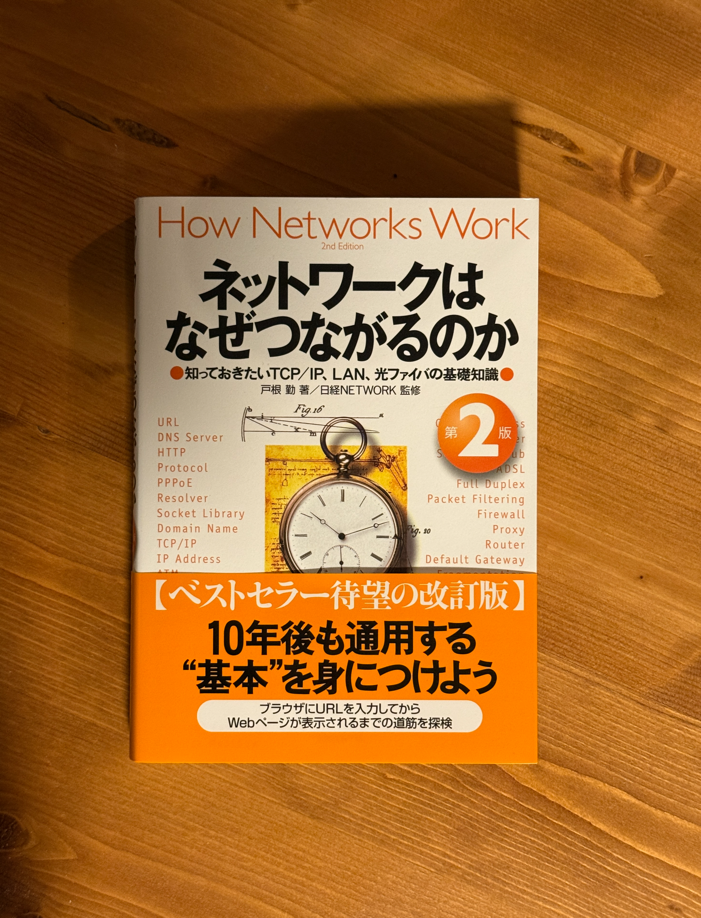

『ネットワークはなぜつながるのか』を読んだ


ネットワークはなぜつながるのか 第2版を読んだので感想などをまとめる。
どんな本か#
ブラウザにURLを入力してからサーバーから返ってきたレスポンスをブラウザで表示するまでの間に起きることを順を追って説明してくれる本。
章の構成は以下。
| Chapter Number | Title | Summary |
|---|---|---|
| 第1章 | Webブラウザがメッセージを作る―ブラウザ内部を探検 | ブラウザにURLを入力してからブラウザがIPアドレスを解決し、HTTPメッセージを作成してプロトコルスタックに渡すまでに行うこと |
| 第2章 | TCP/IPのデータを電気信号にして送る―プロトコル・スタックとLANアダプタを探検 | ブラウザから依頼を受けたプロトコルスタックがソケットを作成してから通信を終えてソケットを抹消するまでの流れ |
| 第3章 | ケーブルの先はLAN機器だった―ハブとスイッチ、ルーターを探検 | LANケーブルへと送り出されたパケットがリピータハブ、スイッチングハブ、ルーターなどの機器を経由してインターネットに向かって進んでいく流れ |
| 第4章 | アクセス回線を通ってインターネットの内部へ―アクセス回線とプロバイダを探検 | パケットがインターネット接続用ルーターを経由してインターネットの中に入って進んでいく様子 |
| 第5章 | サーバー側のLANには何がある | サーバー側のPOPに入ったパケットがサーバーの手前にあるファイアウォール、キャッシュサーバー、負荷分散装置などを通過する様子 |
| 第6章 | Webサーバーに到着し、応答データがWebブラウザに戻る―わずか数秒の「長い旅」の終わり | サーバーがリクエストを受信してからクライアント側のブラウザが結果を表示するまでの流れ |
特に第1章 ~ 第3章の内容が普段のWeb開発と関わりが大きいかつ自分の知識が浅い領域だったのでとても面白かった。
なぜ読んだか#
そもそも自分はコンピューターサイエンスをこれまで(大学などで)体系的に学んできていないのもあり、以下の目的でコンピューターサイエンスの勉強を隙間時間に進めている。
- ソフトウェアエンジニアリング文脈の問題解決やスキル獲得の速度を上げたい
- 知的好奇心を満たしたい
去年はコンピュータシステムの理論と実装を読んでコンピューターについて広く浅く理解することができたので次はネットワーク周りを強化しようと思い、読んでみた。(他にはセキュリティ、データ構造とアルゴリズム、データベース、プロトコルスタック、シェルなどが気になっている)

学びや気付き#
「ブラウザにURLを打ち込んでエンターキーを押すと何が起こるか」という質問に暗記ではなく理解をもとに答えられるようになった。(はず) 特に以下に関しては今までより詳しく理解できた。
- ブラウザが何をしているか
- DNSが何をしているか
- TCP接続においてプロトコルスタックが何をしているか
- IPが何をしているか
- イーサネットとは何か
- インターネットとは何か
ネットワークの基礎を学んだことで今後の問題解決や技術理解の助けにもなってくれそう。
それぞれ現時点での自分の理解を書いてみる。
1. ブラウザが何をしているか#
- FQDNをもとにDNSにIPアドレスを問い合わせて解決する
- HTTPリクエストを作成する
- ソケットを作成する
- プロトコルスタックにTCPコネクションの確立を依頼する
- プロトコルスタックにリクエストの送信を依頼する
- 通信が終わったらソケットを抹消する
どんなシステムコールを呼ぶ必要があるのか気になったのでCで簡単なHTTP Clientを書いてみた。
今回自分が実装したHTTP Clientでは以下のような流れでシステムコールや関数が呼ばれる。
getaddrinfo(3)を使ってドメイン名に合致するIPアドレス(の配列)を取得socket(2)でソケットを作成しソケットへのファイルディスクリプタを取得するconnect(2)サーバーへの接続を確立する2.で取得したファイルディスクリプタに対してwrite(2)でリクエストを書き込むread(2)でレスポンスを読み込む- サーバー側がソケットをクローズしたらクライアント側でも
close(2)を使ってソケットをクローズする
なお、実装はgetaddrinfo(3)のEXAMPLESを参考にしたらほとんど完成してしまった。
比較のためにGoでもsyscallパッケージを使って書いてみた。
2. DNSが何をしているか#
DNSサーバーに格納されているデータ#
DNSサーバーには以下のようなデータが格納されている。
- 名前
- サーバーやメール配送先の名前
- クラス
- 常に
INが格納される。 - DNSができた当初はインターネット以外のネットワークでも利用も検討されていたが、現在はインターネット以外のネットワークが消滅したので
INしか入らない。
- 常に
- タイプ
- 名前にどのようなタイプの情報が対応付けられているかを表現した値。
- 具体例
- A
- IPアドレス(AddressのAらしい)
- MX
- メール配送先
- CNAME
- 名前にエイリアスを設定する
- A
以下はDNSレコードの例。
| 名前 | クラス | タイプ | クライアントに返答する項目 |
|---|---|---|---|
| example.com | IN | A | 192.0.2.226 |
| example.test | IN | MX | 10 mail.example.test |
| mail.example.test | IN | A | 192.0.2.227 |
世界中のDNSサーバーが協調する仕組み#
blog.example.comというドメインのIPアドレス解決を例に考える- DNSサーバは階層構造でレコードを分散管理しており、以下のように階層ごとに別々のDNSサーバーに格納されている(同じになることもあるが)
ルートドメイン.comexample.comblog.example.com
- 問い合わせはルートドメインから順番にたどるので以下のような流れになる
- 最寄りのDNSサーバが
ルートドメインのDNSサーバにblog.example.comのIPアドレスを問い合わせる- レコードのIPアドレスはわからないが、
comドメインのDNSサーバのIPアドレスはわかるからそっちに聞いてくれ、とcomドメインのDNSサーバのIPアドレスが返ってくる
- レコードのIPアドレスはわからないが、
- 最寄りのDNSサーバが
comドメインのDNSサーバにblog.example.comのIPアドレスを問い合わせる- 同じ要領で
example.comのDNSサーバのIPアドレスが返ってくる
- 同じ要領で
- 最寄りのDNSサーバが
example.comドメインのDNSサーバにblog.example.comのIPアドレスを問い合わせる- 同じ要領で
blog.example.comのDNSサーバのIPアドレスが返ってくる
- 同じ要領で
- 最寄りのDNSサーバが
blog.example.comドメインのDNSサーバにblog.example.comのIPアドレスを問い合わせるblog.example.comのIPアドレスが返ってくる
- 最寄りのDNSサーバが
- DNSサーバにはキャッシュ機能があるので必ずしも毎回このようなステップになるとは限らない。
- 当然TTLも存在するので最新のデータが返ってくるとも限らない。
3. TCPでの接続の場合にプロトコルスタックが何をしているか#
プロトコルスタックとはプロトコル(e.g. TCP, UDP, IP, etc.)を役割ごとに階層化して積み重ねたソフトウェア群を指す。ネットワークの文脈では主にSocketライブラリとLANドライバの橋渡しの役割を担う。
+---------------------------------------------------+
Application Layer->| +---------------------------------------------+ |
| | Network Applications | |
| | (Web Browser, Mailer, Web Server, etc.) | |
| +----------------------------+----------------+ |
| | Socket Library | Resolver | |
| +----------------------------+----------------+ |
+---------------------------------------------------+
OS Layer---------->| Protocol Stack |
| +----------------------+ +--------------------+ |
| | TCP | | UDP | |
| | (Connection-based) | | (Connectionless) | |
| +----------------------+ +--------------------+ |
| +---------------------------------------------+ |
| | IP (Route & Forward) | |
| | +------------+ +------------+ | |
| | | ICMP | | ARP | | |
| | +------------+ +------------+ | |
| +---------------------------------------------+ |
+---------------------------------------------------+
Driver Layer------>| +---------------------------------------------+ |
| | LAN Driver (Controls LAN Adapter) | |
| +---------------------------------------------+ |
+---------------------------------------------------+
Hardware Layer---->| +---------------------------------------------+ |
| | LAN Adapter | |
| +---------------------------------------------+ |
+---------------------------------------------------+
『ネットワークはなぜつながるのか 第2版』P96 図2.1 をもとに再構成
getaddrinfo(3)を使ってドメイン名に合致するIPアドレス(の配列)を取得- UDP担当部分にDNSサーバーへの問い合わせを依頼する
socket(2)でソケットを作成しソケットへのファイルディスクリプタ(以下fd)を取得する- ソケット1つ分のメモリを確保しそこに初期状態であることを記録して
- アプリケーションにfdを返す。
connect(2)サーバーへの接続を確立する- アプリケーションからsocketのfdとサーバー側のIPアドレスとポート番号を受け取る
- 以下の手順で3ウェイハンドシェイクを行う
- (クライアント側)送信元と宛先のポート番号やコントロールビット(
SYN=1,ACK=0)を含んだTCPヘッダーを作成する - (クライアント側)IP担当部分に送信を依頼する
- (サーバー側)IP担当部分がパケットを受け取ってTCP担当部分に渡す
- (サーバー側)TCP担当部分がTCPヘッダーを調べてそこに記載されている宛先ポート番号に相当するソケットを探し出す
- (サーバー側)該当するソケットに必要な情報を記録して、接続動作が進行中だという状態にする
- (サーバー側)送信元と宛先のポート番号やコントロールビット(
SYN=1,ACK=1)を含んだTCPヘッダーを作成する - (サーバー側)IP担当部分に送信を依頼する
- (クライアント側)IP担当部分がパケットを受け取ってTCP担当部分に渡す
- (クライアント側)TCP担当部分がTCPヘッダーを調べてサーバー側の接続動作が成功なら(
SYN=1,ACK=1)「サーバーのIPアドレスやポート番号」と「接続完了を示す制御情報」等をソケットに記録する - (クライアント側)サーバー側に接続成功を示すTCPヘッダー(
SYN=0,ACK=1)を送り返す
- (クライアント側)送信元と宛先のポート番号やコントロールビット(
2.で取得したfdに対してwrite(2)でリクエストを書き込む- 送信データを受け取ったプロトコルスタックはデータを相手に送る
- データが大きいときは分割して送る
- ウィンドウ制御方式(ACK番号の到着を待たず、複数のパケットを連続して送る方式) で効率化を図る。ウィンドウの大きさは受信側のバッファの空き容量をもとに調整される。
- 送信するすべてのパケットにシーケンス番号(何バイト目か)を付与し、受信側はACK番号(受け取ったシーケンス番号の中でその時点で最大のものに1を足した数値)を返し、「ここまでは受け取ったのでこの番号のパケットを送ってください」というメッセージを伝える
- 送信側はACK番号を見て必要に応じてパケットを再送する
- 送信データを受け取ったプロトコルスタックはデータを相手に送る
- データを受信した場合、受信したデータ断片とTCPヘッダーを途中でデータが抜けていないか検査し、問題なければACK番号を送り返す
read(2)でレスポンスを読み込む- 受信バッファに積まれたデータをアプリケーションに渡す
- サーバー側がソケットをクローズしたらクライアント側でも
close(2)を使ってソケットをクローズする(なお、クライアントが先にソケットをクローズすることもあり、どちらになるかはアプリケーション次第になる。)- (サーバー側)がcloseを呼び出す
- (サーバー側)プロトコルスタックがコントロールビットの
FINを1にセットしたTCPヘッダーを作成し、IP担当部分に送信を依頼する - (クライアント側)
FIN=1であるTCPヘッダーが届いたのを確認して、自分のソケットにサーバー側が接続動作に入ったことを記録する - (クライアント側)
FIN=1であるパケットを受け取ったことをサーバー側に知らせるためにACK番号をサーバー側に送り返す - (クライアント側)サーバーからすべてのデータを受け取ったことをアプリケーション側に知らせる
- (クライアント側)コントロールビットの
FINを1にセットしたTCPヘッダーを作成し、IP担当部分に依頼してサーバーに送ってもらう - (サーバー側)クライアント側から
FIN=1なパケットを受け取ったらACK番号を返す - (クライアント側)サーバーからACK番号が返ってきたことを確認し、サーバーとのやり取りを終了する
4. IPが何をしているか#
IPの主な役割は宛先IPアドレスをもとにパケットの転送先を決定し、次のホップへ届けること。
- IPヘッダー、MACヘッダーの作成
- 送信元・宛先IPアドレス、TTL(Time To Live)などを含むIPヘッダーをTCPパケットに付与する
- TTLはルーターを経由するたびに1減らされ、0になったらパケットは破棄される(ループ防止)
- IPヘッダーの前にMACヘッダーを付与する
- MACヘッダーには宛先MACアドレスと送信元MACアドレスが含まれる
- MACアドレスの解決にはARPを使う
- ARPとは、IPアドレスからMACアドレスを解決するためにLAN内でブロードキャストを行い、対象IPアドレスのMACアドレスを特定するためのプロトコルである
- キャッシュ機能もあるので毎回ブロードキャストするわけではない
- 送信元・宛先IPアドレス、TTL(Time To Live)などを含むIPヘッダーをTCPパケットに付与する
- ルーティング
- ルーティングテーブルを参照して「次にどのルーターにパケットを渡すか」を決定する
- 宛先IPアドレスとルーティングテーブルのエントリを比較し、最長プレフィックスマッチで転送先を選ぶ
- 宛先が同一LAN内であればそのままL2で届けられる
- あくまでIPは「どこに届けるか」を決める仕組みで、実際の転送はイーサネットを用いて行うためMACアドレスが必要になる
IPはベストエフォートの転送のみを担い、信頼性の保証はしない(それはTCPの責務)
ICMPとARPはIPの動作を補助する形で動く。
- ICMP: エラー通知(宛先到達不能など)や疎通確認(ping)に使われる
- ARP: IPアドレスからMACアドレスを解決するためにLAN内でブロードキャストされる
5. イーサネットとは何か#
イーサネットはLAN内の機器間でデータをやり取りするための規格。IPがネットワーク間の転送を担うのに対し、イーサネットは同一LAN内の転送を担う。
- アドレス体系
- MACアドレス(48ビット)を使って送受信先を識別する
- MACアドレスは原則的にはNICに割り当てられた固有の識別子
- IPアドレスが「建物の住所」なら、MACアドレスは「人の名前」に相当する
- フレーム
- イーサネットではデータを「フレーム」という単位で送受信する
- フレームには送信元MACアドレス、宛先MACアドレス、データ、エラー検出用のFCSが含まれる
- スイッチングハブ
- MACアドレスと接続ポートの対応表(MACアドレステーブル)を持ち、宛先MACアドレスに対応するポートにだけフレームを転送する
- 最初は対応表が空なのでブロードキャストし、応答を受け取ることでテーブルを学習していく
6. インターネットとは何か#
なお「インターネット」は広範な意味を持つ言葉だが、ここでは本書のスコープ(ISP・POP・IXあたりの話)に限定して整理する。
インターネットとは、世界中のISP(インターネットサービスプロバイダ)のネットワークが相互接続された巨大なネットワークの集合体。
- ISPとPOP
- ISP(Internet Service Provider)はインターネット接続サービスを提供する事業者
- POP(Point of Presence)はISPの設備が置かれた接続拠点。ユーザーのパケットはまずここに届く
- POP内にはルーターが置かれており、パケットを次の拠点に転送する
- NOC
- POPから入ってきたパケットが集まる
- プロバイダの中核となる設備
- データ転送能力が数テラビット/秒を超えるルーターが使われることもある
- IX(Internet eXchange)
- 複数のISPが相互に接続するための中立的な施設
- IXを介することでISP間のパケットのやり取りが効率化される
- パケットの経路
- ユーザーのパケットはISPのPOP → ISPバックボーン → IX → 相手ISP → サーバーという流れで届く
- 経路上のルーターがBGP(Border Gateway Protocol)で経路情報を交換し合うことでインターネット全体のルーティングが成立している
Q&Aメモ#
こちらのポストを参考にしてClaudeに質問を作成してもらい、都度Claudeに相談しながら回答を考えてみた。
あくまで「この質問に対しては暗記ではなく理解をもとに答えられるようになった」ということをメモしておくための自分用学習メモです。
| No | 質問 | 回答 |
|---|---|---|
| 1 | TCPの3ウェイハンドシェイクはなぜ「2ウェイ」ではダメなのか | サーバーからクライアントへの経路が機能しているかどうかをサーバーが確認できないため。 双方向の疎通を双方が確認するには3メッセージ必要になる。 |
| 2 | DNSキャッシュのTTLを短くするデメリットは何か | キャッシュDNSサーバーから権威DNSサーバーへのリクエスト数が増加する。その結果以下が発生する。 • 権威DNSサーバーが処理しなければならないリクエストの量が増えるため、権威DNSサーバーのレイテンシが増加する • キャッシュDNSサーバーがキャッシュを返す割合が減るため権威DNSサーバーへのリクエスト分のレイテンシが増加する |
| 3 | NATがエンドツーエンド通信に何をしているか図で説明せよ | 送信時はプライベートIPとポート番号をルーターのグローバルIP+任意のポート番号に変換し、受信時はその逆の変換を行う。 結果として通信相手はNATを意識することなく、単一のグローバルIP+ポート番号とやりとりをしているように見える。 |
| 4 | TCPとUDPの使い分けを「信頼性」以外の観点で説明せよ | 前提として、UDPは接続確立や再送のオーバーヘッドがなく、輻輳制御も行わないため高速に通信を行うことができる。 信頼性を多少犠牲にしてでも高速性を重視したい場面ではUDPの利用が有効なケースがある。 たとえば遠隔運転システムでは、一瞬映像が途切れたとしてもリアルタイムに映像が表示され続けることが重要になるためUDPのメリットを享受しやすいと考えられる。 |
| 5 | ルーティングテーブルの「最長プレフィックスマッチ」とは何か、なぜその方式か | ルーティングの際にルーティングテーブルの中から宛先IPアドレスとマッチする範囲が一番長いレコードにあるネットワークを次のルーティング先とする方式。 10.0.0.0/8に向けるデフォルト経路と10.1.2.0/24に向ける特定経路が存在する場合は後者を優先しないと意図したルーティングにならないため。 |
| 6 | HTTPSでサーバー証明書が必要な理由を、鍵交換から説明せよ | MITMへの対策のため。 証明書がないと鍵の交換相手が本物のサーバーなのか攻撃者なのかわからないため必要になる。 |
| 7 | パケットロスが0%でもアプリが遅い理由を説明せよ | ここでは「アプリが遅い」 == 「クライアント側で見ているWebアプリの動作が想定よりも遅い」と仮定する。 • DNSサーバーのレイテンシが大きい • クライアントのマシンの動作が遅く、リクエスト送信までに時間がかかっている • アクセス回線にADSLが含まれるなどがそもそも低速な回線がボトルネックになっている • クライアントとサーバーが地理的に離れており、そもそも通信に時間がかかる • 経路上のネットワーク機器が古く、非効率な通信を行っている • サーバーの負荷が高く、CPUがスロットリングした結果、サーバーの処理全体が遅くなっている • マイクロサービス構成になっておりそもそも必要なネットワークIOの数が多い |
| 8 | サブネットマスクはなぜ必要か、IPアドレスだけでは何が足りないか | IPアドレスのうち、どこまでがネットワーク部でどこからがホスト部なのかがわからなくなるため。 |
| 9 | ARPはなぜIPレイヤーではなくL2に属するのか | ARPはIPアドレスをMACアドレスに解決するプロトコルだが、L2のフレームで直接ブロードキャストし、IPルーティングを経由しない。 つまりL3の仕組みに依存せずに動作する必要があるためL2に属する。 |
| 10 | ping が通るのにHTTPが失敗するとき、最初に何を疑うか | ファイアウォールによるポートのブロックを疑う。 pingはICMPプロトコルを利用しており、そもそもポート番号を指定する必要がない。一方でHTTPはポート番号を指定する必要があるため。 他にはサーバー側でサーバープログラムが起動していない可能性やTLSの証明書エラーの可能性も考えられる。 |
まとめ#
読む前の期待以上にネットワークの解像度を上げられたので読んでよかった。
次はOperating Systems: Three Easy PiecesでOS周りの深堀りをしていこうと思っている。メモリ管理やプロセス、スレッド周りの解像度を上げたい。あと課題でCを書く必要があるのも若干良さそうに感じたポイントでもある。(Cを書くのは辛いが、その分頑張りが身になる感覚があり…)1
軽く読んだ感じ、英語ではあるもののかなり平易に書いてくれているので読みやすそうだった。やっていく。2
(C言語はCS50で軽くさらった程度なのでせっかくなので『プログラミング言語C 第2版』あたりの入門書を一冊読むのもいいかもしれない)